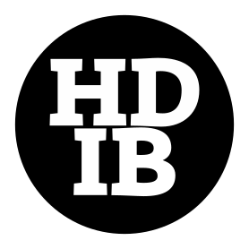

Zer da hizkuntzen trataera bateratua?
Zertarako da? Zer helburu du?
Zer hizkuntzari eragiten die ikuspegi honek?
Zergatik aipatzen da orain kontzeptu hori? Zerk eraginda indartu da orain?
Zer oinarriren gainean eraikitzen da ikuspegi edo jardunbide hori?
Guzti horri erantzuten ahaleginduko gara hemendik aurrera
…el tratamiento integrado de las Lenguas, propuesta metodológica, basada en el enfoque comunicativo de la enseñanza de las lenguas aplicado a las situaciones de aprendizaje en las que coexisten lenguas diferentes. El TIL propone el trabajo colaborativo del profesorado de las distintas lenguas de la escuela a partir de todos aquellos elementos que estas comparten. La coordinación entre el profesorado, además de multiplicar la eficacia de las intervenciones individuales, facilita el desarrollo de la competencia plurilingüe de los aprendices.
Apraiz Jaio, M. V., Pérez Gómez, M. del M., & Ruiz Pérez, T. (2012). La enseñanza integrada de las lenguas en la escuela plurilingüe. Revista Iberoamericana de Educación, 59(1), 119 137. https://doi.org/10.35362/rie590459
Hezkuntzari ikasle eleaniztunak sortzea eskatzen zaio. Europan hiru hizkuntza eskatzen dira, gure inguruko curriculumean lau ere bai.
Lau hizkuntzatan hezkuntza-helburuak zehazten ari gara. Hizkuntzen zehaztasunetara jo barik HHn hiru hizkuntzatan helburuak ezar daitezke eta LHn lau.
Lekutan geratu da atzo goizeko elebakartasunetiko helburu multzoa.
Baskongadetan 1992 OCD
“Hizkuntza arloko ikuspegia integratzailea izan behar da; horrela, erabaki amankomunak eta metodologia antzekoak erabiliz, curriculumaren hizkuntza batean ikasitakoa beste batera pasatuko du ikasleak”
Baskongadetan 2007 Curriculum Dekretua, Tontxu Campos
Dekretu honek lehentasuna ematen dio hizkuntzen trataerari. Hizkuntzetarako Europako Erreferentzia Markoa da elebitasuna, eleaniztasuna eta ikastetxeko hizkuntza-proiektuaz diharduten artikuluen esparru-testuingurua; izan ere, bat etorri behar dute Europar Batasuneko hizkuntza-politikak eta ikastetxeetako hizkuntza-proiektuek, betiere, Eusko Legebiltzarrak alor horretan arautzen duena beteta.
Gizartearen errealitate soziolinguistiko eta soziokulturalarekin bat egiteko, testuinguru eleanitz bati erantzungo dion markoa sortu nahi da; hala, ikasleek bi hizkuntza ofizialak eta atzerri-hizkuntza bat edo bi behar bezala ikas ditzaten da azken xedea. Ebaluazioetan izandako emaitzei eta ingurunearen ezaugarri soziolinguistikoei erreparatuta, ikastetxeek aukera dute hizkuntza bakoitzaren erabilera-esparrua handitzeko.
🤦 Euskara izango da marko berriaren hizkuntza nagusia. Egungo errealitate soziolinguistikoak gaztelaniaren erabilera bultzatzen duela aintzat hartuta eta ikusita eguneroko jardunak eta ebaluazioek frogatua dutela irakasteko eta ikasteko prozesuan euskara erabiltzea funtsezkoa dela, ikasleek euskara ahoz eta idatziz behar bezala erabiltzeko gaitasuna eskuratuko badute, euskarak elementu integratzailea izan behar du hezkuntza-sisteman, eta erabilera nagusiko hizkuntza, lehen adierazitako irakasteko eta ikasteko prozesuan. Gaztelania edukiak ikasteko hizkuntza izango da, hura behar bezala ikasiko dela bermatzeko
2015 Heziberri 2020
1.– Hezkuntza-eskumenak dituen sailak hizkuntzen trataera integratua eta integrala sustatuko du. Horrek arreta berezia ematen dio ikasketak hainbat hizkuntzatan emateari, komunikatzeko konpetentzia eleaniztun bat lortzeko asmoz. Hizkuntza bakoitzak berezkoa duena lantzea eta denek berdina dutena partekatzea da, betiere, ikasleak modu egokian eta eraginkorrean erabiltzen duelarik egoera bakoitzak eskatzen duen hizkuntza.
Baskongadetan 2023 Oinarrizko Hezkuntzaren curriculuma
9.– Hizkuntza, informaziorako eta ezagutzaren eraikuntzarako atea izanik, ikasteko prozesuaren erdigunean dago. Hizkuntzen ikaskuntzari konpetentzia-ikuspegi globalizatu batetik heltzen zaio, arreta hizkuntzen ikaskuntza integratuan eta hizkuntzen eta jakintzen ikaskuntza integratuan jartzen duten ikuspegi metodologikoen bidez. (Oinarri pedagogikoak)
4.– Komunikazio- eta hizkuntza-konpetentzia garatzeko, hizkuntzen ikaskuntza curriculum-arloen barruan modu transbertsalean integratzen duten ikuspegi metodologikoak baliatuko dira. (Hizkuntza esparrua)
➕ Konpetentzia Eleaniztuna (Haur Hezkuntzaren curriculumean ere bai)
Hiztunak darabilen Hx hizkuntzaren azpian gainontzeko hizkuntzetako gaitasun bera ere badago.
Hx baten erabileraren alderdi formalek (morfologiak, sintaxiak, fonologiak…) ez dute hizkuntzaren erabilera azaltzeko biderik. Bai, berriz, hizkuntzaren erabilera orokorraren menpeko beste zerbaitek.
Hizkuntzak besteekin ikasi (ez dira gureak, geure egiten dugun eta gu egiten gaituen arren)
Hizkuntzak ikasteko estrategiak erkideak dira
Hizkuntza ekoizpen soziala da
Gainontzeko hiztunek hizkuntzekiko duten jarrera
Ikasteko unitatea testua da (ez hitza edo esaldia)
Ikuskera paralinguistikoak (egoera enuntziatiboa)
Ariketa
Zein dira (eta zelan dira) hizkuntzen arteko elementu eta gaitasun transferigarriak?
Berez, eremu bakarra osatzen dute horiek, beraz, transferigarritzat har daitezke
Ezaugarri erkidea dute trebetasun eta jakite guzti horiek, erkideak dira-eta. Ez dira hizkuntza bakoitzean independenteki garatu behar, garapen bakar eta bateratua dute-eta.
Hor dugu hizkuntza-hezkuntza bateratuaren oinarri koherenterako oinarria, hizkuntza bakoitzean garatu beharreko gaitasun eta ezagutzei ez-ikusi egin gabe.
Azken helburua, ikastetxeko hizkuntzen programazio adostua.
Bitarteko helburuak: arlo eta ikasgaien arteko oinarri didaktiko eta metodologiko bateratua eraikitzea.
Hizkuntza komunikazio tresnatzat hartuta
Ikasleen komunikazio konpetentzia garatzeko.
Testuak ulertu eta ekoitzi (zuzenak, egokiak, koherenteak, kohesionatuak eta eraginkorrak)
Ikuspegi komunikatiboan. Ikasleak benetako komunikaziorako prestatuta
Zehaztu beharrekoak dira kontu batzuk: zenbat diren irakasten diren hizkuntzak, zenbat erabiltzen diren hizkuntzaz gain bestelako ezagutzak irakasteko. Zein ikasuntzak behar duen hizkuntzaren bat eta zeinek hizkuntza jakina
Oinarri-oinarrian: koordinazioa
Berori tradizioan hainbat bidetatik garatzen izan den arren, egun araudi markoak horretara bultzatzen duela ere esan dezakegu, baliozkotutako jardunbidetzat hartzen baita.
| Proiektua | Eremua | Testu mota | Azken ekoizpena H1 | Azken ekoizpena H2 | Azken ekoizpena H3 |
|---|---|---|---|---|---|
| Gure arbasoen ekarpenak | Pertsonen arteko harremanak | Azalpena | katalogoa | Informazioa jasotzeko fitxa | Azalpen laburra: txosten txiki bat |
| Inauteriak | Literatura Pertsonen arteko harremanak | Narrazioa | Bakarrizketa/ bertsoak | Ipuina kontatu ahoz | Kondairak |
| Bazterkerien aurka: kontuz aurreiritziekin | Pertsonen arteko harremanak Komunikabideak | Argudioa | Eztabaida | Pobreziaren aurkako kanpaina | Etorkinen egoera salatu manifestu baten bidez/role play |
| Zain dezagun gure aberastasuna | Hizkuntza Literaturan Ikasketako hizkuntza Hizkuntza gizarteko komunikabideetan | Argudioa | Liburu bat gomendatu | Alegia baten moraleja eztabaidatu | Olerkiak eta abestiak (testu bildumarako) |
| Ikertzaileak gara | Hizkuntza gizarteko komunikabideetan Ikasketako hizkuntza | Azalpena | Makina sinple bat egiteko instrukzio testua | Ofizioei buruzko galdetegiaren informea | Lanbideei buruzko “Tribial” jolasa |
Justifikazioa:
Gaur egun komunikabideek duten garrantzia ikusita, ikasleek informazioa eta iritzia ezberdintzeko eta iritiz kritikoa garatzeko beharra dute, horregatik kazetaritza genero ezberdinak aztertzea garrantzitsua da.
Proiektu guztien ardatza :
Mota: narrazioa
Erabilera eremua: komunikabideak
Gaia: gaur egun: informazioa ala iritzia?
| H1: Irrati-kronika | H2:Reportaje | H3: A digital story |
|---|---|---|
| Kronikak kultura eta kiroletako gaurkotasuna hartuko lituzke gaitzat. Eginkizuna hiruko taldeetan antola daiteke. | Los alumnos trabajarán un tema elegido por ellos mismos, recogido de la actualidad, de sus propios campos de interés o de los libros de lectura propuestos durante el curso. | By using electronic primary sources students will create a few minutes movie that will include a variety of media — audio, photographs, and text— on either a historical or an actual fact. |
| Komunikazio Egoera | Situación de comunicación | Situation of communication |
| Gaia:Interpretatutako gaurkotasuna Igorlea: Hirunaka bildutako ikasleak. Hartzailea: Ikastetxeko beste ikasleak Kanala: Ahozkoa Asmoa eta helburua:Kiroletako edo kulturako gaurkotasuna jakinaraztea, era pertsonalean, eta uhinen bitartez. Argitalpen lekua: Ikastetxeko irratia Eremua:Hizkuntza gizarteko komunikabideetan |
Tema: La actualidad comentada. Emisor: Los alumnos/as en grupos de 3. Receptor: El resto del alumnado del centro. Canal: Escrito. Intención y finalidad: Transmitir de manera personal, con abundancia de datos y de modo ameno la actualidad. Lugar de publicación: En la biblioteca del centro, en formato de suplemento. Ámbito de uso: La lengua en los medios de comunicación social. |
Topic: A historical or an actual fact Sender : Students, in groups of three Recipient: Peers Channel: Oral and audio visual Aim: To narrate a fact of interest using narrative techniques and audio visual resources. Place of production: The classroom and the Web Field: Language in the mass media |
| Hizkuntzetik askekoak | Hizkuntzen menpekoak |
|---|---|
| Narrazio testua (eus, eng) Komunikabideak (spa) Oinarrizko galderak, 6W (spa, eus, eng) |
Aditz formak (spa, eus, eng) Lokailuak (spa, eus, eng) |
Komunikazio proiektu batzuk, Berritzeguneen eskutik gehienak
https://sites.google.com/site/komunikazioproiektuaklh/
https://sites.google.com/site/htbmintegia/
http://htbtil0809.wordpress.com/
http://nagusia.berritzeguneak.net/hizkuntzak/
Aztertu beharrekoak
Hurrengo ariketari kolpetzeko
Gaiari kolpetzeko aitzakia bila
Zerrendatu taldekideko egoera bana, bat aukeratu eta justifikatu

Hizkuntzen Trataera Bateratua